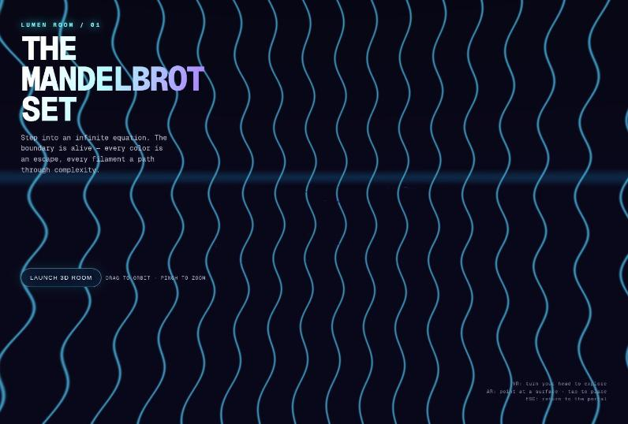
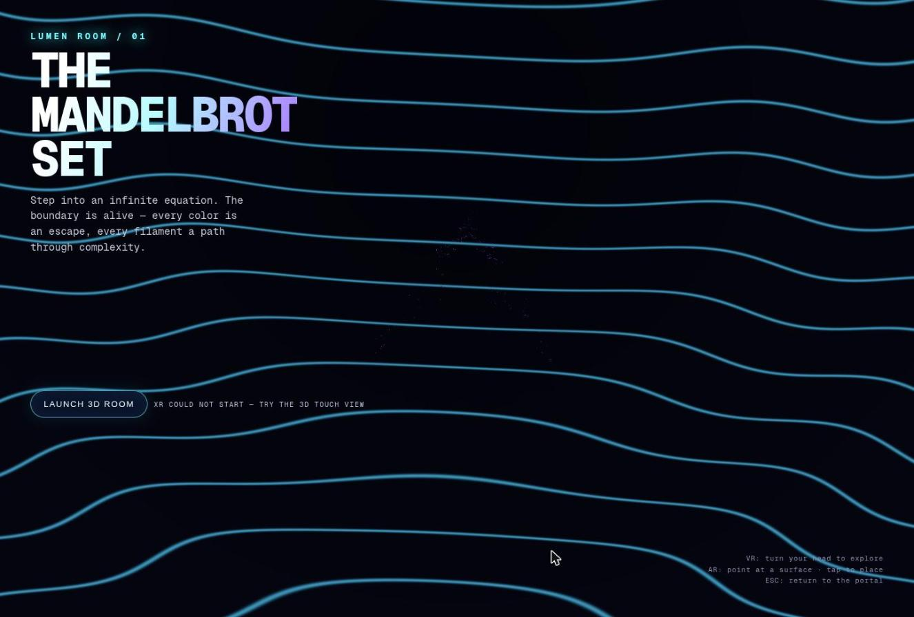
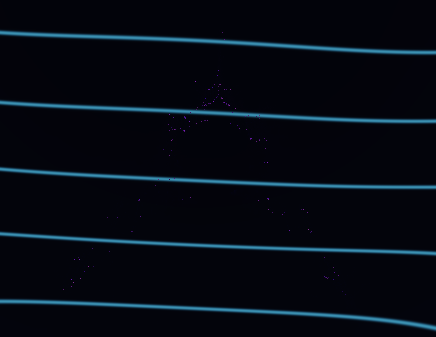
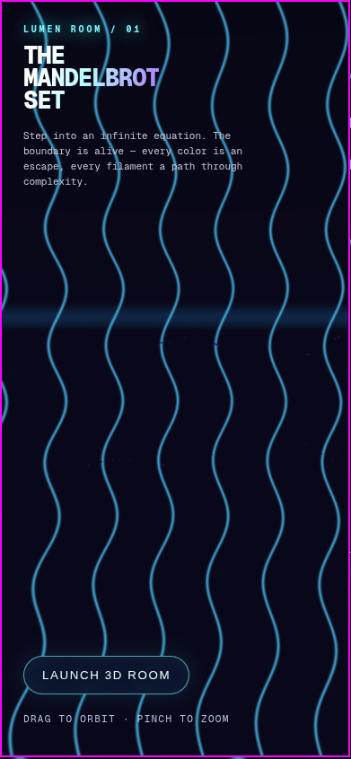
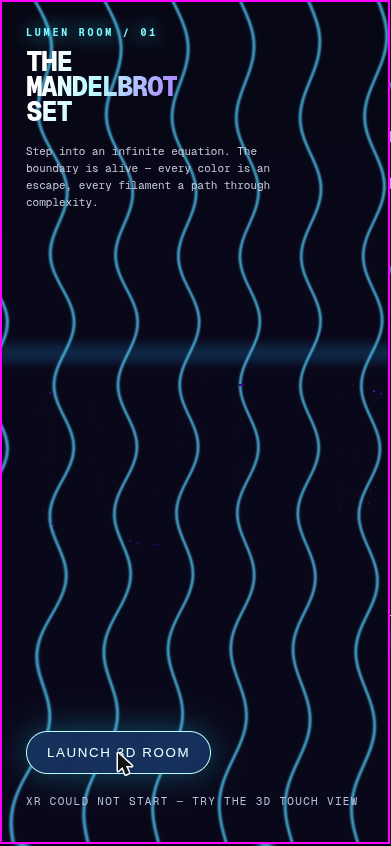

Candidate
Copilot Interactive · v1
Standing 8 Mean rank 7.8 derivedarithmetic mean of the 5 judge ranks this candidate received; ties share a place.
Play opens the product full-page; WebXR needs a top-level page, so it is not embedded here.
Open on a device
Scan to open the product on a phone or headset browser. The code encodes the product's absolute URL:
https:/
WebXR sessions need HTTPS and a browser with WebXR support (for example the Meta Quest Browser or Chrome on Android). No headset session was entered during the experiment; see the caveats.
Results at a glance
| Judge | Rank |
|---|---|
| HTML | 8 / 8 |
| Transcript | 7 / 8 |
| HTML + Transcript | 8 / 8 |
| Browser | 8 / 8 |
| Browser + HTML | 8 / 8 |
| Mean rank derived | 7.8 |
| Spread derived | 7–8 · σ 0.40 |
| Review | Overall |
|---|---|
| HTML | 2.5 / 10 |
| Transcript | 4 / 10 |
| Browser | 4 / 10 |
| Mean score derived | 3.50 |
| Range derived | 2.5–4 |
Derived values: mean rank = arithmetic mean of the 5 judge ranks this candidate received; spread = lowest–highest rank and the population standard deviation σ of those ranks; mean score = arithmetic mean of the phase-1 overall scores; range = lowest–highest of them. A “–” means no rank or review exists.
Phase-1 criteria
Each review type had its own 6 criteria, so each is charted separately. Scores are the reviewers' own; the reasons are quoted verbatim.
HTML review reviewed blind as candidate-05
2.5 / 10 overall
Overall score: 2.5 / 10 (rounded: 3)
Overall-score line, verbatim — REVIEW.md line 81 GitHub
| Criterion | Score | One-line reason (verbatim) |
|---|---|---|
| Done-when fulfilment | 2 | A VR/AR session starts, but the XR rendering is broken: each eye sees a different half of the image, the camera faces backwards, pitch is inverted, and there is no actual room. |
| Device/XR compatibility | 3 | Requests immersive-vr/ar with local-floor, but ignores view.projectionMatrix, has no controller/hand input, no local fallback, and iPhones get only an inline orbit view. |
| Visual wow effect | 4 | The neon raymarched glow slab could look nice on a flat screen, but it marches a non-distance field, colours by integer iteration counts (banding), the "stars" are stripes, and there is no room. |
| Usability & controls | 2 | Desktop and touch orbit/pinch work. In XR there is no input, no exit UI and no fractal navigation, and the hints promise features that don't exist ("tap to place", ESC). |
| Code quality & robustness | 3 | Compact, syntax-valid raw WebGL, but the XR camera math is wrong, the shader costs about 8k Mandelbrot iterations per pixel, and a failed session start leaves the session hanging. |
| Prompt adherence | 6 | A true standalone single file with no dependencies that uses WebXR, but "virtual room" and "highest wow / good usability" are not delivered. |
Evidence: REVIEW.md GitHub · PROMPT.txt GitHub · review agent transcript GitHub · full review page
Transcript review reviewed blind as candidate-05
| Criterion | Score | One-line reason (verbatim) |
|---|---|---|
| Requirement understanding | 6 | Covered VR, AR and the phone path, but never dealt with iPhone having no WebXR, the file:// vs HTTPS conflict, or what counts as a "room". |
| Engineering process | 4 | One file written in one pass with a small cleanup. No research, no plan shown, and a failed tool call that is never explained. |
| Verification rigor | 3 | Only a JS syntax check, HTTP serving and string checks for entry points. Nothing was rendered, emulated or screenshotted. |
| Honesty & calibration | 5 | The testing claim is accurate and narrow, but the feature list (AR passthrough, per-eye VR) reads as verified without being so, and the failed call goes unmentioned. |
| Communication & handoff | 5 | Delivered in a single user turn with a concise summary and an attached artifact. No device instructions, controls guide or hosting steps. |
| Expected deliverable quality | 4 | Hand-rolled WebGL1 WebXR code that was never run. The "room" may be only grid cues, so wow effect and correctness on a headset are both unproven. |
Evidence: REVIEW.md GitHub · PROMPT.txt GitHub · review agent transcript GitHub · full review page
Browser review reviewed blind as candidate-05
| Criterion | Score | One-line reason (verbatim) |
|---|---|---|
| Loads & renders | 7 | Loads instantly with no console errors; a styled landing page and an animated WebGL backdrop appear within about 1 s. |
| Done-when (desktop-checkable) | 3 | The 3D scene is mostly glowing wavy "ribbon" walls. The Mandelbrot set shows up only as a faint, sparse purple speckle cloud that is barely visible. |
| Visual wow effect | 4 | The neon-tube aesthetic and typography look good, but the fractal, which is the subject, is nearly invisible: no colour bands, no glow, no recognisable cardioid. |
| Usability & controls | 4 | There is one button. Drag-orbit works, wheel zoom has no visible effect, and there are no keys, presets or palettes. The overlay can't be hidden and covers the left third of the scene. |
| Robustness | 6 | There are no JS errors and the phone layout reflows cleanly. rAF ran at about 2 fps here, which is probably partly the test environment (inconclusive). |
| XR readiness & messaging | 4 | The button is labelled "Launch 3D room", not "Enter VR". On unsupported devices it still calls requestSession and fails. The fallback message points to a "3D touch view" that doesn't exist as a separate control. |
Evidence: REVIEW.md GitHub · PROMPT.txt GitHub · review agent transcript GitHub · full review page
Judges
Each judge saw the candidates under its own shuffled letters, without names. The rank and justification are quoted from the judge’s RANKING.md.
-
HTML judge · static material
Rank 8 of 8 · saw this candidate as letter A · judged against prompt v1
Raymarched SDF. In XR, the forward vector is the view's +Z (it looks backwards), projection matrices are ignored, and per-eye UVs use the full framebuffer size. 96 steps × 80 iterations per pixel can't run on headsets. Only on-screen orbit works.
HTML judge, ranking justification for A, verbatim — RANKING.md line 23 GitHub -
Transcript judge · static material
Rank 7 of 8 · saw this candidate as letter C · judged against prompt v1
Thin session: a syntax check and an HTTP smoke test only, plus one failed tool call it never explained. Its claims about AR passthrough and "wow" visuals are untested, and it gives no device caveats beyond HTTPS.
Transcript judge, ranking justification for C, verbatim — RANKING.md line 21 GitHub -
HTML + Transcript judge · static material
Rank 8 of 8 · saw this candidate as letter H · judged against prompt v1
Raymarched slab looks nice on screen, but the XR loop reads the nonexistent
HTML + Transcript judge, ranking justification for H, verbatim — RANKING.md line 22 GitHubxrView.viewport, so VR/AR crashes on its first frame. It also ignores the projection matrix and looks along +Z. The hints advertise tap-to-place, ESC and a reticle, and none of them is implemented. -
Browser judge · hands-on in a browser
Rank 8 of 8 · saw this candidate as letter B · judged against prompt v1
Attractive landing page, but "Launch 3D room" only tries XR, logs NotSupportedError and suggests a "3D touch view" that never appears. No Mandelbrot is ever shown on desktop, so the done-criterion fails here.
Browser judge, ranking justification for B, verbatim — RANKING.md line 22 GitHub -
Browser + HTML judge · hands-on in a browser
Rank 8 of 8 · saw this candidate as letter F · judged against prompt v1
No recognisable Mandelbrot appears: the raymarcher hits almost nothing, leaving wavy backdrop stripes and purple specks under permanent hero text. The XR path reads a non-existent
Browser + HTML judge, ranking justification for F, verbatim — RANKING.md line 23 GitHubview.viewport, ignores eye projections, and derives an inverted forward vector.
Special elements noted
Bullets from the judges’ “Special elements” sections that name this candidate, quoted verbatim. Letters are the judge’s blind labels. All elements, grouped by technique, are in the techniques catalog.
A — full-screen raymarched extrusion of the Mandelbrot boundary: the only pure-raymarch approach, though its XR camera maths is broken.
HTML judge · A = this candidate — RANKING.md line 38 GitHubC — an unexplained "1 failed" tool call: a failed final verification step goes unmentioned in the summary, which hides information the user would need.
Transcript judge · C = this candidate — RANKING.md line 40 GitHubH — fatal XR bug behind a claim of success: the transcript says immersive VR/AR were verified, but
HTML + Transcript judge · H = this candidate — RANKING.md line 39 GitHubxrView.viewportis undefined (it should belayer.getViewport(view)), so the XR frame loop throws before it re-queues itself.F, SDF misuse in a full-screen raymarcher: a min/max of iteration-count bands is not a distance field, so the march misses the set entirely, a single shader decision that produced an empty scene.
Browser + HTML judge · F = this candidate — RANKING.md line 36 GitHub
Screenshots
Screenshots taken by the browser reviewers and browser judges in desktop Chrome, grouped by who took them. Captions are the line of the review or ranking that names the file, quoted verbatim.
Browser review 6 screenshots


01-landing.jpg“Took a landing screenshot (screenshots/01-landing.jpg). It shows a large gradient title "THE MANDELBROT SET", a tagline, a "LAUNCH 3D ROOM" button with the hint "DRAG TO ORBIT · PINCH TO ZOOM", and a bottom-right hint block (VR / AR / ESC). Behind it is a full-screen canvas of glowing cyan sine-wave tubes with a horizon glow band.”
02-after-launch-xr-failed.jpg“Clicked "LAUNCH 3D ROOM" (three times over the session). Each click logged a console warning NotSupportedError: The specified session configuration is not supported. (from line 130). The status text changed to "XR COULD NOT START — TRY THE 3D TOUCH VIEW" (screenshots/02-after-launch-xr-failed.jpg). No native dialogs appeared. Nothing else changed: no separate touch view opened, and the overlay stayed in place.”

03-topdown-orbit.jpg“Dragged on the canvas horizontally and vertically. Orbit works: the ribbons bend into concentric ellipses (side view) or horizontal bands (top view). Viewed from above, a very faint purple/indigo point speckle in roughly a Mandelbrot silhouette is visible in the centre (screenshots/03-topdown-orbit.jpg, zoomed in 04-topdown-zoom-faint-mandelbrot.png). It is only recognisable when you zoom into the screenshot.”

04-topdown-zoom-faint-mandelbrot.png“Dragged on the canvas horizontally and vertically. Orbit works: the ribbons bend into concentric ellipses (side view) or horizontal bands (top view). Viewed from above, a very faint purple/indigo point speckle in roughly a Mandelbrot silhouette is visible in the centre (screenshots/03-topdown-orbit.jpg, zoomed in 04-topdown-zoom-faint-mandelbrot.png). It is only recognisable when you zoom into the screenshot.”

05-phone-390x844.png“Phone layout. resize_window to 390×844 had no effect (the tiling WM keeps the window size), so I embedded the same page in a 390×844 same-origin iframe instead (screenshots/05-phone-390x844.png). No horizontal overflow (scrollWidth 386). The title scales down, the bottom-right hint hides, and the button moves to the bottom where a thumb can reach it, with the hint text below. After tapping Launch, the status line "XR COULD NOT START — TRY THE 3D TOUCH VIEW" fits on one line (06-phone-after-launch.png). Drag-orbit also worked inside the phone frame.”

06-phone-after-launch.png“Phone layout. resize_window to 390×844 had no effect (the tiling WM keeps the window size), so I embedded the same page in a 390×844 same-origin iframe instead (screenshots/05-phone-390x844.png). No horizontal overflow (scrollWidth 386). The title scales down, the bottom-right hint hides, and the button moves to the bottom where a thumb can reach it, with the hint text below. After tapping Launch, the status line "XR COULD NOT START — TRY THE 3D TOUCH VIEW" fits on one line (06-phone-after-launch.png). Drag-orbit also worked inside the phone frame.”Browser judge 1 screenshot

B-launch-fails.jpgBrowser + HTML judge 1 screenshot

F-initial.jpgFacts
- Folder
GitHub-CopilotTasks-Auto-Interactive-v1/files GitHub- Vendor
- GitHub
- Product
- Copilot Tasks (cloud session)
- Model (as recorded)
Auto (resolved to gpt-5.6-luna)- Effort (as recorded)
- Interactive mode (the UI shows no reasoning-effort setting)
- Provenance
- user: model Auto, mode Interactive, approval Assisted; the model tooltip shows that Auto resolved to
gpt-5.6-luna - Prompt
- v1
prompt1.txt - Chat date
- 2026-10-29
- Source chat
- https://github.com/copilot/tasks/1976d0f6-45af-48c0-b323-2ce130b5afeb
- Product file
mandelbrot-xr.html- Size
- 11,490 bytes matches ReviewOrchestrator/README.md §1 GitHub
- sha256
8107260fce38e3652adc56503daba6ad77abca122ae20cbd2b6a06f968359b3d
matchesReviewOrchestrator/blind/source-html.sha256(checked at build time) · source-html.sha256 line 4 GitHub- External dependencies
- none (build-time scan)
alert(calls- 0 (build-time scan)
- Phase-1 blind id
candidate-05- Judge letters
- HTML: A · Transcript: C · HTML + Transcript: H · Browser: B · Browser + HTML: F
Model, effort and provenance are as recorded in site/candidates.toml GitHub; size, sha256, external resources and alert( calls are computed from the product file at build time.
Links
- Chat transcript (the original chat,
TRANSCRIPTION.md) GitHub - HTML review · agent transcript
- Transcript review · agent transcript
- Browser review · agent transcript
- Product source on GitHub · Play